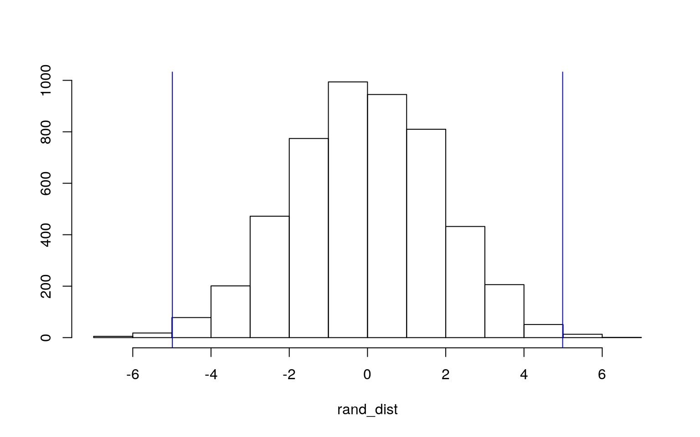
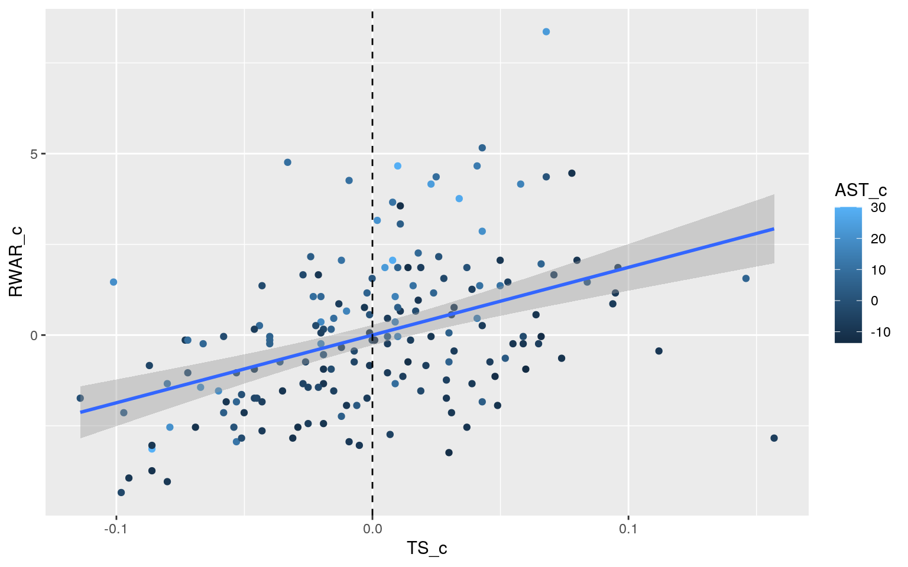
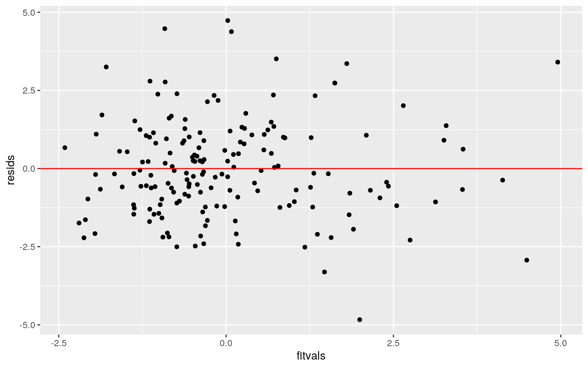
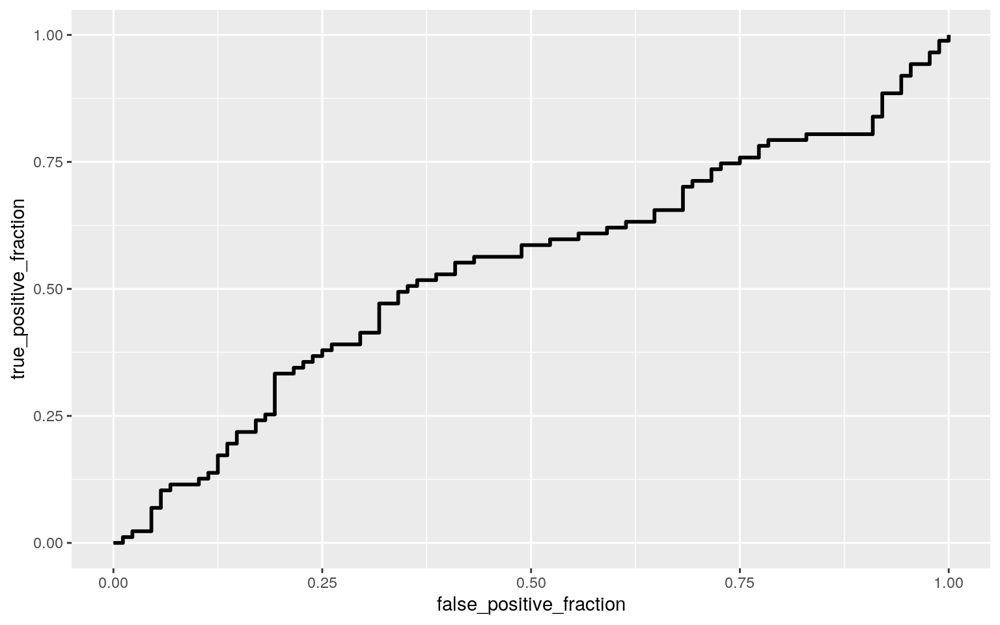
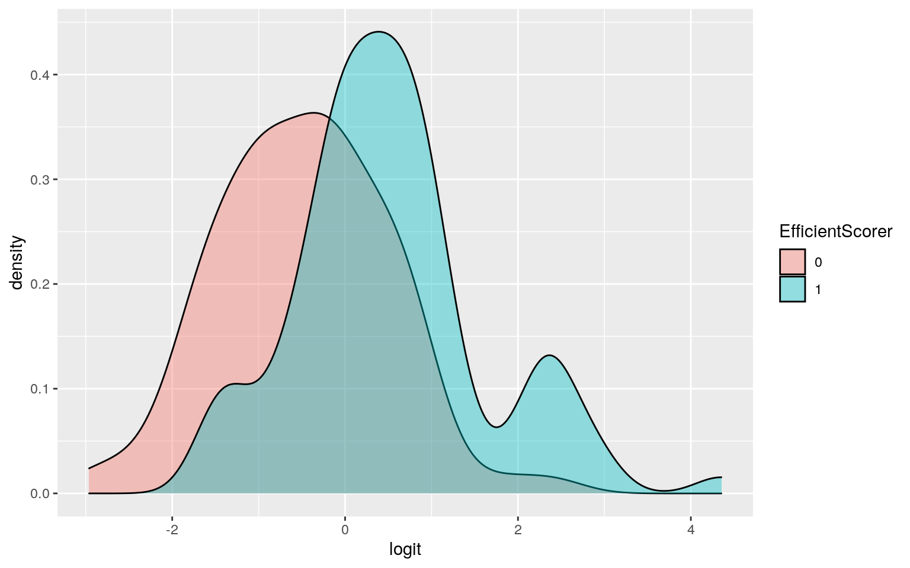

RaptorWAR2 <- read_csv("RaptorWAR2.csv")
PlayerBoxData <- read_csv("PlayerBoxData.csv")
BoxData2 <- PlayerBoxData
BoxData2 <- select(BoxData2, -c(14:23))
playerdata <- inner_join(RaptorWAR2, BoxData2, by="Player")
playerdata <- playerdata %>% mutate_all(~gsub("PG-SG", "SG", .))
playerdata$RWAR <- as.numeric(as.character(playerdata$RWAR))
playerdata$Age <- as.numeric(as.character(playerdata$Age))
playerdata$Minutes <- as.numeric(as.character(playerdata$Minutes))
playerdata$`TS%` <- as.numeric(as.character(playerdata$`TS%`))
playerdata$`3PAr` <- as.numeric(as.character(playerdata$`3PAr`))
playerdata$FTr <- as.numeric(as.character(playerdata$FTr))
playerdata$`TRB%` <- as.numeric(as.character(playerdata$`TRB%`))
playerdata$`AST%` <- as.numeric(as.character(playerdata$`AST%`))
playerdata$`STL%` <- as.numeric(as.character(playerdata$`STL%`))
playerdata$`BLK%` <- as.numeric(as.character(playerdata$`BLK%`))
playerdata$`TOV%` <- as.numeric(as.character(playerdata$`TOV%`))
PlayerData2 <- select(playerdata, -c(12:13))
PlayerDataFinal <- PlayerData2 %>% mutate(EfficientScorer=ifelse(`TS%` > mean(`TS%`), 1, 0))For this analysis, I used the same data set that I used in Project 1, individual statistics for 175 basketball players as well as their overall summary statistic, RAPTOR WAR. However, I made a few changes to the data set. Firstly, I removed the steal and block percentage statistics from the data. In the last analysis, they didn’t have many significant relationships with other statistics which merited further exploration, and steals and blocks are also more random and inconsistent occurences than the other stats tracked in the data, so I removed them. I also added a binary statistic called “EfficientScorer”. This statistic tracks whether a player scores at a rate above or below average league efficiency (mean TS%). The other statistics are defined as follows:
Player Name/Team/Age/Minutes Played: Self-Explanatory
Position: A player can have one of 5 positions on a basketball team (PG, SG, SF, PF, C), and this position largely defines what his role on the court is.
True Shooting (TS%): Points scored per scoring attempt divided by 100
Three Point Attempt Rate (3PAr): Percentage of shots taken from three-point range.
Free Throw Rate (FTr): Average number of free throw attempts per shot taken.
Assist Percentage (AST%): Percentage of assists a player is responsible for while he is on the court.
Total Rebound Percentage (TRB%): Percentage of available rebounds a player grabs while he is on the court.
Turnover Percentage (TOV%): Number of turnovers a player commits per 100 possessions.
RAPTOR WAR: Estimate of additional wins a player adds to a team compared to a replacement (average) player.
man1<-manova(cbind(`RWAR`,`Age`,`Minutes`,`TS%`,`3PAr`,`FTr`,`TRB%`,`AST%`,`TOV%`)~Position, data=PlayerDataFinal)
summary(man1)## Df Pillai approx F num Df den Df Pr(>F)
## Position 4 1.1004 6.9577 36 660 < 2.2e-16 ***
## Residuals 170
## ---
## Signif. codes: 0 '***' 0.001 '**' 0.01 '*' 0.05 '.' 0.1
' ' 1summary.aov(man1)## Response RWAR :
## Df Sum Sq Mean Sq F value Pr(>F)
## Position 4 14.34 3.5860 0.8221 0.5128
## Residuals 170 741.57 4.3622
##
## Response Age :
## Df Sum Sq Mean Sq F value Pr(>F)
## Position 4 23.28 5.8191 0.3576 0.8385
## Residuals 170 2766.46 16.2733
##
## Response Minutes :
## Df Sum Sq Mean Sq F value Pr(>F)
## Position 4 346243 86561 1.9367 0.1065
## Residuals 170 7598129 44695
##
## Response TS% :
## Df Sum Sq Mean Sq F value Pr(>F)
## Position 4 0.07504 0.0187596 9.4756 6.13e-07 ***
## Residuals 170 0.33656 0.0019798
## ---
## Signif. codes: 0 '***' 0.001 '**' 0.01 '*' 0.05 '.' 0.1
' ' 1
##
## Response 3PAr :
## Df Sum Sq Mean Sq F value Pr(>F)
## Position 4 2.2431 0.56077 17.986 2.465e-12 ***
## Residuals 170 5.3003 0.03118
## ---
## Signif. codes: 0 '***' 0.001 '**' 0.01 '*' 0.05 '.' 0.1
' ' 1
##
## Response FTr :
## Df Sum Sq Mean Sq F value Pr(>F)
## Position 4 0.32271 0.080678 6.6113 5.722e-05 ***
## Residuals 170 2.07451 0.012203
## ---
## Signif. codes: 0 '***' 0.001 '**' 0.01 '*' 0.05 '.' 0.1
' ' 1
##
## Response TRB% :
## Df Sum Sq Mean Sq F value Pr(>F)
## Position 4 1999.8 499.94 58.584 < 2.2e-16 ***
## Residuals 170 1450.7 8.53
## ---
## Signif. codes: 0 '***' 0.001 '**' 0.01 '*' 0.05 '.' 0.1
' ' 1
##
## Response AST% :
## Df Sum Sq Mean Sq F value Pr(>F)
## Position 4 6681.7 1670.43 23.975 9.717e-16 ***
## Residuals 170 11844.5 69.67
## ---
## Signif. codes: 0 '***' 0.001 '**' 0.01 '*' 0.05 '.' 0.1
' ' 1
##
## Response TOV% :
## Df Sum Sq Mean Sq F value Pr(>F)
## Position 4 175.96 43.990 3.2929 0.01251 *
## Residuals 170 2271.09 13.359
## ---
## Signif. codes: 0 '***' 0.001 '**' 0.01 '*' 0.05 '.' 0.1
' ' 1pairwise.t.test(PlayerDataFinal$`TS%`, PlayerDataFinal$`Position`, p.adj = "none")##
## Pairwise comparisons using t tests with pooled SD
##
## data: PlayerDataFinal$`TS%` and PlayerDataFinal$Position
##
## C PF PG SF
## PF 9.1e-05 - - -
## PG 2.3e-07 0.18369 - -
## SF 0.00098 0.59372 0.06856 -
## SG 2.5e-07 0.24364 0.82836 0.09302
##
## P value adjustment method: nonepairwise.t.test(PlayerDataFinal$`3PAr`, PlayerDataFinal$`Position`, p.adj = "none")##
## Pairwise comparisons using t tests with pooled SD
##
## data: PlayerDataFinal$`3PAr` and
PlayerDataFinal$Position
##
## C PF PG SF
## PF 6.9e-07 - - -
## PG 2.3e-06 0.7357 - -
## SF 6.7e-12 0.0175 0.0064 -
## SG 6.7e-12 0.0496 0.0192 0.5455
##
## P value adjustment method: nonepairwise.t.test(PlayerDataFinal$`FTr`, PlayerDataFinal$`Position`, p.adj = "none")##
## Pairwise comparisons using t tests with pooled SD
##
## data: PlayerDataFinal$FTr and PlayerDataFinal$Position
##
## C PF PG SF
## PF 0.00209 - - -
## PG 0.00074 0.78902 - -
## SF 1.7e-05 0.15904 0.24202 -
## SG 1.3e-05 0.22746 0.34439 0.75449
##
## P value adjustment method: nonepairwise.t.test(PlayerDataFinal$`TRB%`, PlayerDataFinal$`Position`, p.adj = "none")##
## Pairwise comparisons using t tests with pooled SD
##
## data: PlayerDataFinal$`TRB%` and
PlayerDataFinal$Position
##
## C PF PG SF
## PF 2.6e-12 - - -
## PG < 2e-16 1.4e-06 - -
## SF < 2e-16 0.02697 0.01072 -
## SG < 2e-16 1.3e-08 0.42677 0.00077
##
## P value adjustment method: nonepairwise.t.test(PlayerDataFinal$`AST%`, PlayerDataFinal$`Position`, p.adj = "none")##
## Pairwise comparisons using t tests with pooled SD
##
## data: PlayerDataFinal$`AST%` and
PlayerDataFinal$Position
##
## C PF PG SF
## PF 0.136 - - -
## PG 2.2e-15 1.2e-11 - -
## SF 0.208 0.850 1.6e-11 -
## SG 0.011 0.318 4.0e-10 0.245
##
## P value adjustment method: nonepairwise.t.test(PlayerDataFinal$`TOV%`, PlayerDataFinal$`Position`, p.adj = "none")##
## Pairwise comparisons using t tests with pooled SD
##
## data: PlayerDataFinal$`TOV%` and
PlayerDataFinal$Position
##
## C PF PG SF
## PF 0.5825 - - -
## PG 0.3648 0.1411 - -
## SF 0.0538 0.1579 0.0047 -
## SG 0.0470 0.1534 0.0030 0.9185
##
## P value adjustment method: none0.05 / 70## [1] 0.00071428571 - (0.95^70)## [1] 0.9724163I performed a MANOVA to check if there were any significant differences in means of numeric variables across levels. The resulting p-value was less than .05 so I proceeded to do univariate ANOVAs for every numeric variable. 6 had a p-value less than .05, so I did post-hoc t-tests on all of those. In all, 70 tests were performed (1 MANOVA, 9 ANOVAs, and 60 post-hoc t-tests). With that number of tests, there is a 97.24% chance of a type I error using .05 as alpha. The corrected Bonferroni statistic is roughly 0.000714 or 7.14e-04. Values which are significantly different under this new threshold include:
-TS% for Cs compared to PFs/PGs/SGs
-3PAr for Cs compared to every other position
-FTr for Cs compared to SFs and SGs
-TRB% for Cs compared to every other position
-TRB% for PFs compared to PGs and SGs
-AST% for PGs compared to every other position
Cs had significant differences with all other positions across most variables, because C is an extremely unique position on the basketball court, and has a job with very different priorities, namely a deprioritization of scoring except as a last option in almost all cases. PGs are the primary passers in basketball, and have a much larger share of passes than any other position, which is why they have a significantly different mean AST% compared to every other position. Normality/Linearity/Homogeneity distributions are not likely to be met, because on every team, there are generally 1 or 2 players who have the team operate around them, and they rack up most of the statistics. However, because the minutes discrepancy between starter level players usually isn’t too great, the no extreme outliers assumption is likely to be met.
PlayerDataSGC <- PlayerDataFinal %>% filter(Position == "SG" | Position == "C")
rand_dist <- vector()
for (i in 1:5000){
new <- data.frame(`AST%` = sample(PlayerDataSGC$`AST%`), Position = PlayerDataSGC$Position)
rand_dist[i] <- mean(new[new$Position == "SG", ]$AST.) - mean(new[new$Position == "C", ]$AST.)
}
PlayerDataSGC %>% group_by(Position) %>% summarize(means = mean(`AST%`)) %>% summarize(mean_diff = diff(means))## # A tibble: 1 x 1
## mean_diff
## <dbl>
## 1 4.99mean(rand_dist > 4.988745 | rand_dist < -4.988745)## [1] 0.0074{hist(rand_dist,main="",ylab=""); abline(v = c(-4.988745, 4.988745), col="blue")} I decided to test for the mean difference in assist rate between C’s and SG’s, because while both positions deepmhasize passing, their relationship showed significanct difference in mean assist rate in the previous post-hoc t-test, prompting me to explore further. The null hypothesis is that there is no significant difference in mean assist rate between C’s and SG’s, whereas the alternative hypothesis is that there is a significant difference. Using a randomization difference in means test, the test statistic for mean difference in assist rate was 4.988, with a p-value of 0.0072. Graphing this statistic shows it’s significance, as almost the entire sampling distribution (99.28%) is contained within the confines of the positive and negative test statistics.
PlayerDataFinal$RWAR_c <- PlayerDataFinal$RWAR - mean(PlayerDataFinal$RWAR)
PlayerDataFinal$TS_c <- PlayerDataFinal$`TS%` - mean(PlayerDataFinal$`TS%`)
PlayerDataFinal$AST_c <- PlayerDataFinal$`AST%` - mean(PlayerDataFinal$`AST%`)
fit<-lm(`RWAR_c`~`TS_c`*`AST_c`, data= PlayerDataFinal)
summary(fit)##
## Call:
## lm(formula = RWAR_c ~ TS_c * AST_c, data =
PlayerDataFinal)
##
## Residuals:
## Min 1Q Median 3Q Max
## -4.8351 -1.0633 -0.1613 0.9968 4.7362
##
## Coefficients:
## Estimate Std. Error t value Pr(>|t|)
## (Intercept) 0.04504 0.11997 0.375 0.70779
## TS_c 21.46279 2.47793 8.662 3.39e-15 ***
## AST_c 0.09496 0.01166 8.143 7.74e-14 ***
## TS_c:AST_c 0.77092 0.24061 3.204 0.00162 **
## ---
## Signif. codes: 0 '***' 0.001 '**' 0.01 '*' 0.05 '.' 0.1
' ' 1
##
## Residual standard error: 1.576 on 171 degrees of freedom
## Multiple R-squared: 0.438, Adjusted R-squared: 0.4282
## F-statistic: 44.43 on 3 and 171 DF, p-value: < 2.2e-16PlayerDataFinal %>% select(RWAR_c, TS_c, AST_c) %>% na.omit %>% ggplot(aes(TS_c, RWAR_c, color=AST_c))+
geom_point()+geom_smooth(method="lm")+ geom_vline(xintercept=mean(PlayerDataFinal$TS_c,na.rm=T),lty=2)
resids<-fit$residuals
fitvals<-fit$fitted.values
ggplot()+geom_point(aes(fitvals,resids))+geom_hline(yintercept=0, color='red')
ks.test(resids, "pnorm", mean=0, sd(resids))##
## One-sample Kolmogorov-Smirnov test
##
## data: resids
## D = 0.051561, p-value = 0.7408
## alternative hypothesis: two-sidedcoeftest(fit, vcov = vcovHC(fit))##
## t test of coefficients:
##
## Estimate Std. Error t value Pr(>|t|)
## (Intercept) 0.045044 0.121466 0.3708 0.7112
## TS_c 21.462792 3.391020 6.3293 2.089e-09 ***
## AST_c 0.094962 0.012930 7.3444 8.067e-12 ***
## TS_c:AST_c 0.770921 0.363738 2.1194 0.0355 *
## ---
## Signif. codes: 0 '***' 0.001 '**' 0.01 '*' 0.05 '.' 0.1
' ' 1In my previous analysis, TS and AST were two of the strongest variables in terms of correlation to RWAR, so I was curious to run a linear regression with those two as the explanatory variables. 43.8% of the variation in Raptor WAR can be explained by TS% and AST%, as well as their interaction. Increasing TS% by 1 percentage point at mean AST% leads to a predicted RWAR increase of 21.462. Meanwhile, increasing AST% by 1 percentage point at mean TS% leads to a predicted RWAR increase of 0.095. Finally, the effect of TS% on RWAR increases by 0.771 for every unit increase in AST%. Using the robust SEs increased the p-values of every coefficient fairly noticeably, by multiple orders of magnitude. While this made minimal difference for TS and AST, the interaction crossed the 0.01 significance threshold (from .0016 to 0.036).
PlayerDataFinal$RWAR_c <- PlayerDataFinal$RWAR - mean(PlayerDataFinal$RWAR)
PlayerDataFinal$TS_c <- PlayerDataFinal$`TS%` - mean(PlayerDataFinal$`TS%`)
PlayerDataFinal$AST_c <- PlayerDataFinal$`AST%` - mean(PlayerDataFinal$`AST%`)
samp_distn <- replicate(5000, {
boot_dat <- sample_frac(PlayerDataFinal, replace=T)
bootFit<-lm(`RWAR_c`~`TS_c`*`AST_c`, data=boot_dat)
coef(bootFit)
})
samp_distn %>% t %>% as.data.frame %>% summarize_all(sd)## (Intercept) TS_c AST_c TS_c:AST_c
## 1 0.1204394 3.143614 0.01219482 0.3290752The bootstrapped SE’s were significantly greater than the original SE’s, but were all slightly lower than the robust SE’s. It followed that the p-values were also noticeably greater than the original p-values, but slightly lower than the robust p-values.
fit <- glm(EfficientScorer~RWAR + Minutes, data=PlayerDataFinal, family = binomial(link = "logit"))
exp(coef(fit))## (Intercept) RWAR Minutes
## 1.8764142 1.8271910 0.9983849probs <- predict(fit, type="response")
class_diag(probs,PlayerDataFinal$EfficientScorer)## acc sens spec ppv auc
## 1 0.6857143 0.6781609 0.6931818 0.6860465 0.7552247table(predict=as.numeric(probs>.5),truth=PlayerDataFinal$EfficientScorer) %>% addmargins## truth
## predict 0 1 Sum
## 0 61 28 89
## 1 27 59 86
## Sum 88 87 175ROCplot<-ggplot(PlayerDataFinal)+geom_roc(aes(d=EfficientScorer,m=RWAR + Minutes), n.cuts=0)
ROCplot
calc_auc(ROCplot)## PANEL group AUC
## 1 1 -1 0.5399687PlayerDataFinal$logit <- predict(fit,type="link")
PlayerDataFinal %>% mutate(EfficientScorer=as.factor(EfficientScorer)) %>% ggplot() + geom_density(aes(logit, fill=EfficientScorer), alpha = 0.4) I created a logistic regression model using RWAR and Minutes to predict whether or not a player was an efficient scorer (above or below league-average TS%), because I was interested in further exploring the relationship between scoring efficiency, scoring volume (as represented by minutes, more minutes = more opportunities to score), and overall value (approximated by RWAR). While controlling for Minutes, every one point increase in RWAR predicted the odds of the player being an efficient scorer as being multiplied by 1.8272. Meanwhile, while controlling for RWAR, every one minute extra a player plays yields the odds of the player being an efficient scorer as being multiplied by 0.9984 (a very slight decrease).
To visualize, the odds of a player being efficient or inefficient, I created a log odds density plot which shows the odds of an inefficient scorer at different prediction ranges. There is some noticeable overlap, which shows the imperfection of the predictions. However, there is noticeable separation, especially between the peaks of each density map.
This model had an accuracy of 0.685, meaning that 68.5% of the predictions were correct. The model had a sensitivity of 0.678, meaning that 67.8% of inefficient scorers were correctly predicted as inefficient. The specificity was 0.693, meaning that 69.3% of efficient scorers were correctly classified as efficient. The precision of the model was 0.686, meaning that 68.6% of players predicted to be inefficient were actually inefficient. The AUC for this model (the odds that a randomly selected efficient player would have a higher predicted probability of being efficient than a randomly selected inefficient player) is 0.755, which is fairly strong.
I plotted an ROC curve to map the relationship between sensitivity and specificity. The AUC calculated from this curve is 0.540, which is fairly poor, meaning that predicting the efficiency of a player relative to league average is difficult when solely given RWAR and Minutes.
set.seed(1234)
fit <- glm(EfficientScorer~Position + Age + Team + `3PAr` + FTr + `TRB%` + `AST%` + `TOV%`, data=PlayerDataFinal, family = binomial(link = "logit"))
exp(coef(fit))## (Intercept) PositionPF PositionPG PositionSF PositionSG
Age TeamBOS
## 7.022903e-03 1.016919e-01 1.026495e-01 2.339545e-01
1.223739e-01 1.090460e+00 9.003138e-02
## TeamBRK TeamCHI TeamCHO TeamCLE TeamDAL TeamDEN TeamDET
## 2.599168e+07 1.393390e+00 4.445047e-01 3.848784e-08
7.823706e-01 1.631703e+00 1.468886e-02
## TeamGSW TeamHOU TeamIND TeamLAC TeamLAL TeamMEM TeamMIA
## 3.465511e-01 4.435119e-01 3.056253e+00 3.242129e-01
1.359615e-01 3.152183e-01 2.874341e-01
## TeamMIL TeamMIN TeamNOP TeamNYK TeamOKC TeamORL TeamPHI
## 3.139868e+00 1.506089e-01 2.165490e-01 1.434680e-01
1.485954e+00 8.286430e-10 1.155592e+00
## TeamPHO TeamPOR TeamSAC TeamSAS TeamTOR TeamTOT TeamUTA
## 4.413303e+00 1.080546e-01 5.408519e-01 8.533342e-01
4.346007e-01 7.720994e-02 1.040476e+00
## TeamWAS `3PAr` FTr `TRB%` `AST%` `TOV%`
## 2.497598e-01 2.611603e+01 1.115206e+06 1.095940e+00
9.931554e-01 9.775596e-01probs <- predict(fit, type="response")
class_diag(probs,PlayerDataFinal$EfficientScorer)## acc sens spec ppv auc
## 1 0.8 0.816092 0.7840909 0.7888889 0.8746082table(predict=as.numeric(probs>.5),truth=PlayerDataFinal$EfficientScorer) %>% addmargins## truth
## predict 0 1 Sum
## 0 69 16 85
## 1 19 71 90
## Sum 88 87 175k=10
data<-PlayerDataFinal[sample(nrow(PlayerDataFinal)),]
folds<-cut(seq(1:nrow(PlayerDataFinal)),breaks=k,labels=F)
diags<-NULL
for(i in 1:k){
train<-data[folds!=i,]
test<-data[folds==i,]
truth<-test$EfficientScorer
fit2 <- glm(EfficientScorer~Position + Age + Team + `3PAr` + FTr + `TRB%` + `AST%` + `TOV%`, data=train, family = binomial(link = "logit"))
probs<-predict(fit2,newdata = test,type="response")
diags<-rbind(diags,class_diag(probs,truth))
}
summarize_all(diags,mean)## acc sens spec ppv auc
## 1 0.619281 0.6044444 0.6539286 0.6310823 0.6908157PlayerDataUpdated <- select(PlayerDataFinal, c(3:5, 8:13))
PlayerDataUpdated <- PlayerDataUpdated %>% mutate(OnBrooklyn=ifelse(Team == "BRK", 1, 0))cv <- cv.glmnet(x,y)
cv<-cv.glmnet(x,y,family="binomial")
lasso<-glmnet(x,y,family="binomial",lambda=cv$lambda.1se)
coef(lasso)## 42 x 1 sparse Matrix of class "dgCMatrix"
## s0
## (Intercept) -0.98545402
## PositionPF .
## PositionPG .
## PositionSF .
## PositionSG .
## Age .
## TeamBOS .
## TeamBRK 0.07014195
## TeamCHI .
## TeamCHO .
## TeamCLE .
## TeamDAL .
## TeamDEN .
## TeamDET .
## TeamGSW .
## TeamHOU .
## TeamIND .
## TeamLAC .
## TeamLAL .
## TeamMEM .
## TeamMIA .
## TeamMIL .
## TeamMIN .
## TeamNOP .
## TeamNYK .
## TeamOKC .
## TeamORL .
## TeamPHI .
## TeamPHO .
## TeamPOR .
## TeamSAC .
## TeamSAS .
## TeamTOR .
## TeamTOT .
## TeamUTA .
## TeamWAS .
## `3PAr` .
## FTr 1.79390505
## `TRB%` 0.05198832
## `AST%` .
## `TOV%` .
## OnBrooklyn 0.01793623k=10
data<-PlayerDataUpdated[sample(nrow(PlayerDataUpdated)),]
folds<-cut(seq(1:nrow(PlayerDataUpdated)),breaks=k,labels=F)
diags<-NULL
for(i in 1:k){
train<-data[folds!=i,]
test<-data[folds==i,]
truth<-test$EfficientScorer
fit3 <- glm(EfficientScorer~FTr + `TRB%` + OnBrooklyn, data=train, family = binomial(link = "logit"))
probs<-predict(fit3,newdata = test,type="response")
diags<-rbind(diags,class_diag(probs,truth))
}
summarize_all(diags,mean)## acc sens spec ppv auc
## 1 0.6238562 0.5272439 0.7188528 0.6428571 0.7052417I created one last logistic regression for the efficient scorer variable, and I used every other explanatory variable not used in the previous model, with the exception of TS%. I left this one out, because the efficient scorer variable is directly created from TS%, so it would effectively be like using the response variable as an explanatory variable, which doesn’t give very much insight on things.
This model had an accuracy of 0.800, meaning that 80.0% of the predictions were correct. The model had a sensitivity of 0.816, meaning that 81.6% of inefficient scorers were correctly predicted as inefficient. The specificity was 0.784, meaning that 78.4% of efficient scorers were correctly classified as efficient. The precision of the model was 0.789, meaning that 78.9% of players predicted to be inefficient were actually inefficient. The AUC for this model (the odds that a randomly selected efficient player would have a higher predicted probability of being efficient than a randomly selected inefficient player) is 0.875, which is very strong.
Additionally, I performed 10 fold CV on this model and recorded the same five numbers. With an accuracy of 0.619, a sensitivity of 0.604, a specificity of 0.654, a precision of 0.631, and an AUC of 0.691 (moderately weak), all metrics for this were significantly lower than in the original model, suggesting that 10 fold CV, in this case, is much less effective to predict whether a player is an efficient scorer.
After performing a LASSO on this model, I found that only three of the variables were retained. Two of them were expected: free throw rate (free throws are uncontested shots which are easy to make) and rebounding percentage (players who are closer to the rim more often will take higher percentage shots). However, funnily enough, the final variable was whether or not the player was on the Brooklyn Nets. The Nets this year are well known to have an unprecedented amount of offensive stars, and it is apparently so dramatic that it made being on that team a valid indicator of player efficiency.
When running the model a final time with just these variables, the CV was slightly (but noticeably) higher than the previous CV for all values mentioned, with the notable exception of sensitivity which actually decreased from 0.604 to 0.527. However, all values were lower than those for the original logistic regression performed at the start of this section.